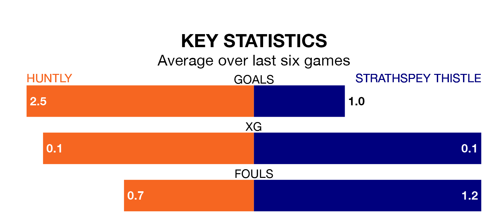

Strathspey Thistle make the journey to Christie Park to play Huntly on Saturday looking to pick up points to end their three-game losing streak.
Strathspey Thistle's struggles have left them with just one point from their last six Highland Football League matches, while their opponents have earned nine from a possible 18.
Strathspey Thistle are bottom of the table after 22 games, of which they have won two and drawn one, earning seven points.
Huntly are 10 places ahead of the visitors in eighth, with 12 wins and three draws putting them on 39 points.
With 24 goals in 22 games so far this season, Strathspey Thistle are the league's joint-second-lowest scorers with 1.1 goals per game. And they are conceding more than average, letting in 77 goals at a rate of 3.5 per game.
The home team, meanwhile, are above average scorers, with 2.6 goals per game, compared to a league average of 1.9. They have conceded 2.2 goals per game.
In the last 10 years, Huntly and Strathspey Thistle have played each other on 12 occasions. Huntly won seven of them, Strathspey Thistle two, and they drew three times.
On average, Huntly scored 2.2 goals and Strathspey Thistle 1.2 in those matches.
Their last meeting was on November 22, when Huntly won 4-1 away.
Huntly's last match was on February 17, a 6-0 loss against Fraserburgh.
Strathspey Thistle lost 2-0 against Inverurie Loco Works last time out, also on February 17.
Updated: 10:08 (UTC), 23/02/24